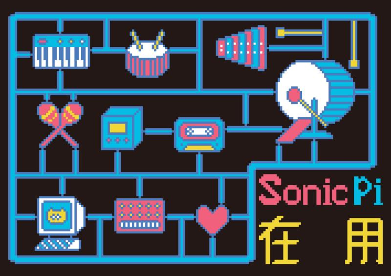

Sonic Pi 在用

Illustrated by OKMAX
主要内容
《Sonic Pi在 用》是由Sonic Pi个人学习笔记积累而成的一本快速教程。文章曾连载于公众号未来之声传送门专栏sonic pi工坊。
Sonic pi官方教程固然十分详尽，这部文档很细致地从语法与基础命令讲起。但在实际应用中,当我想快速上手实现某些功能时，却发现答案散落在文档博客与论坛各处。于是,我开始动手写笔记，记录自己所能找到的答案。鉴于此，这本书展现的是sonic pi在实际工程中的形态，以及我个人关心的应用重点。所以如书名所指，重点在于“用”，而不是学与练。
实现本书各章节的内容，基本能拼凑出一个可以用于编曲的朴素DAW环境。即便有些概念与现成商业软件并不对等，但我也尽力找到了可行的替代方法。我相信书中所列出的方法只是可行方案中的一例，更多方法还有待探索，但是对这门编程语言并不熟悉的读者来说，这些简要的案例能够说明这门编程语言究竟能做到什么程度，对编程方法拥有更具体的印象。
写作动机
我最早听说sonic pi这门语言是在2017年，那时的我对DAW的使用方式还一窍不通。想直接上手使用sonic pi，虽然在程序方面自己没有很大问题，但是对音乐编辑的整个流程没有任何概念。就这样等到2019年末，我已经熟悉Ableton Live大部分内置插件，也开始对遇到问题就找插件的方式感到厌倦。因为商业软件不会给你太多扩展空间，即便找到一两个趁手的工具也不能解决我的全部问题。
此时的我，又想起了之前没用起来的sonic pi。虽然当时没有什么非要实现不可的硬件项目，只是想想sonic pi能跑在树莓上，我就想不应该错过它。所以为了把编程用起来，我开始学习这门用ruby设计出的音乐编程语言。“见过DAW市面”的我竟然能看懂之前搁置的教程了。拼命阅读教程后，我发现sonic pi社区的学习资源真的不少。不同作者的代码风格与侧重点都不一样。也渐渐能看出程序员出身的玩家与具备音乐背景的玩家在代码风格上的分别。虽然不能简单评判孰优孰劣，但我觉得如果有人能集合前两者的长处，那是再好不过的了。
换句话说，能用优雅的程序写出音乐性的片段，是我现阶段追寻的目标。如果强调直觉的重要性，经验丰富的乐手使用乐器演奏一定比Coding更为妥当，也为现今听众所能接受。但与直觉和灵感相对应的，也存在着另一个理性的世界。在这里，一段声音对应的是生成它的表达式。在命令行修改的是规则，听到的音乐片段是规则产生的现象。
我个人并不认为coding与传统演奏相互对立。优秀音乐家的脑内同样存在这种规则，只不过有时不可言说，也不便用表达式向外界揭示。擅用coding的人不一定具备前者如此丰富的表达技巧，因为计算机的历史到今天也不过百年，和一切传统比较，数位世界什么都是崭新的。
此外，程序的扩展性也能使我对音乐的传播媒介拥有更多遐想。如果只是把音乐发布在流媒体平台，完全不必如此大费周折地使用程序制作工程。但如果你想赋予声音更多感染人心的力量，请不要忘记施展程序的魔法，将音乐的逻辑投射到多种媒介空间。
给读者的建议
虽然这本书不会像其它“XX从入门到精通”风格教程一样，涉及基本代码逻辑介绍。但如果你有DAW使用经验，就能找到同等功能的编程实现方式。
而对于有代码经验却从没用过DAW的读者，你可以暂时先忘记sonic pi, 去熟悉任意一种主流DAW。虽然看上去是绕远路，但事后你会发现迂回路线并非浪费时间。Ableton Live拥有友好的汉化文档，相信你能从中学到很多。下面这个交互式学习应用也十分推荐：
https://learningmusic.ableton.com/zh-Hans/
本书使用方法
本书按照几个主题编排如下
节奏控制
音色设置
魔法师的咒语
sonic pi与外部乐器或软件的联动
附录：数列操作指南
上述几章内容没有前后依赖，可以在实际使用中当作文档查询。
请活用左上角的搜索功能，快速查找自己想了解的内容。
最新内容与动态请关注微信公号“未来之声传送门”